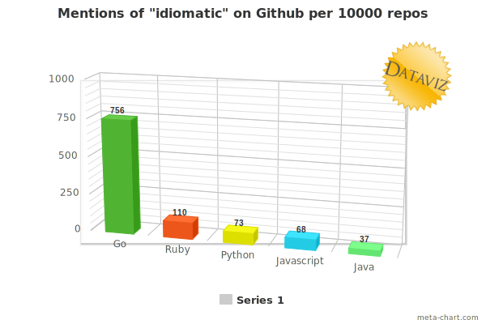
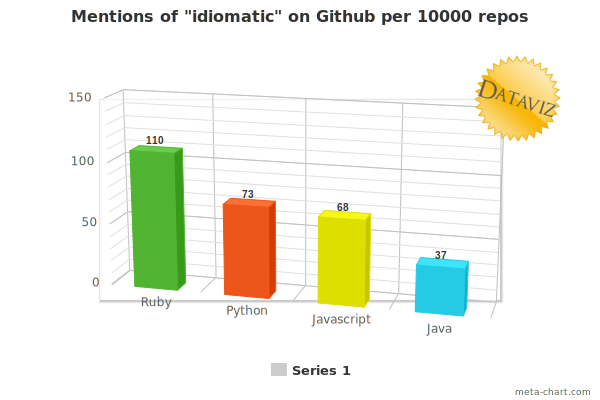

A RubyConf Australia talk by Arne Brasseur
Image: Bomber in Flames by John Atherton
idiom enters the stage
id·i·om \i-dē-əm\ noun
“spit the dummy”
“flat out like a lizard drinking”
“fair suck of the sauce bottle”
Think: “tiny design pattern”
A method that memoizes
def sum
@sum ||= @left + @right
end
Method pre-condition
def filter_negatives(list)
raise "list can't be empty" if list.empty?
# ...
end
Can change over two dimensions
Differs from group to group
def self.filter_files files, ignore = DEFAULT_IGNOREignore_paths = if ignore.respond_to? :read thenignore.readelsif File.exists? ignore thenFile.read ignoreend# ...end
in which Ruby’s idiom evolves
def create_method_obj(names, params)
o = Object.new
for idx in 0 ... params.length
o.instance_variable_set('@' + names[idx],
params[idx])
end
o
end
/Content-Disposition:.* filename="?([^\";]*)"?/ni.match(h)filename = ($1 or "")if /Mozilla/ni.match(env_table['HTTP_USER_AGENT']) and(not /MSIE/ni.match(env_table['HTTP_USER_AGENT']))filename = CGI::unescape(filename)end
class CGI
def CGI::escape(string)
# ...
end
def CGI::unescapeHTML(string)
# ...
end
end
Early, Middle, and Modern Ruby
“The primordial ooze”
Ruby is still very niche
Early adopters from Perl, C, LISP, Smalltalk
Diversity of styles
“Rails runaway train”
Adoption booms through Rails
Idiom crystalizes around Rails
Still lots of flexibility and creativity (Why the Lucky Stiff!)
“They grow up so fast”
Big Rails apps maintained for 5+ years
Desire for best practices, consistency
Wide adoption of a common style
Wide adoption of a common style
“The parallel track”
Resurgence of a “pure Ruby” crowd
More open to novel approaches
Develop their own idioms
in which idiom prevails
Conforming to idiom²
Sounding “natural”
Takes advantage of the language
Is more easily understood by others
Is consistent
Important for projects
Shared ownership
Reduced cognitive overhead
In theory: descriptivist, style guide captures what people do
In practice: well known influencers


Extra hurdle for newcomers
Treating idiom as normative hampers innovation
a whole new idiom
The only constant is change
When a society changes, its language changes
When it comes into contact with other language groups, its language changes
Distributed systems, parallelization
Concurrency models, type systems
Go, Idris, Elixir, Elm, Rust
Monads, functional composition, transducers, CSP
Unseen in Ruby
Will look unfamliar by necessity
json_string = get_json_from_somewhere
result =
Try { JSON.parse(json_string) } >-> json {
Try { json["dividend"].to_i /
json["divisor"].to_i }
}
maybe_user =
Maybe(user) >-> user {
Maybe(user.address)
} >-> address {
Maybe(address.street)
}
From Call Sheet
result.fmap { |value|
broadcast :"#{step_name}_success", value
value
}.or { |value|
broadcast :"#{step_name}_failure", *args, value
Left(StepFailure.new(step_name, value))
}
transformation = t(:map_array, t(:symbolize_keys)
.>> t(:rename_keys, user_name: :user))
.>> t(:wrap, :address, [:city, :street])
T.transduce(
T.compose(
T.map(:succ),
T.filter(:even?)
),
:<<, [], 0..9
)
# => [2, 4, 6, 8, 10]
cw = channel!(Integer, 1)
cr = channel!(Integer, 1)
select! do |s|
s.case(cr, :receive) { |value| perform(value) }
s.case(cw, :send, 3)
end
Idiom is fluid, treat it as such
Programming is a form of expression, find your own voice
“Idiomatic” does not imply “good” and vice versa, look beyond face-value